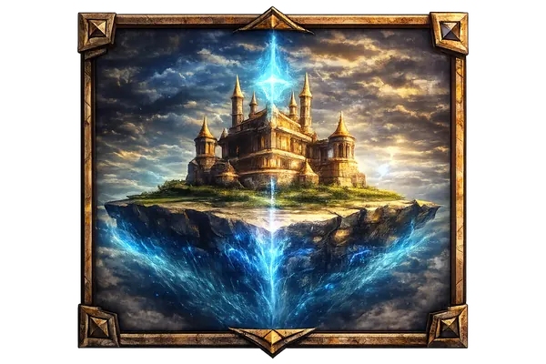
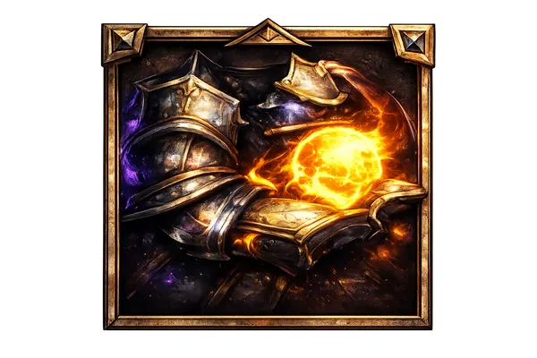
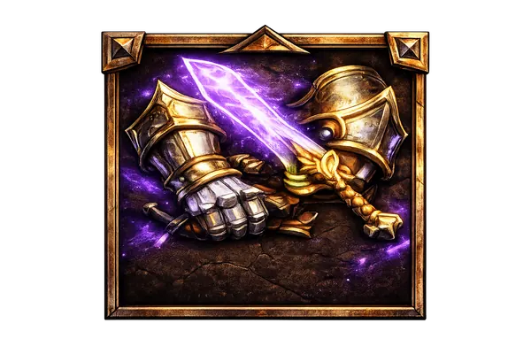
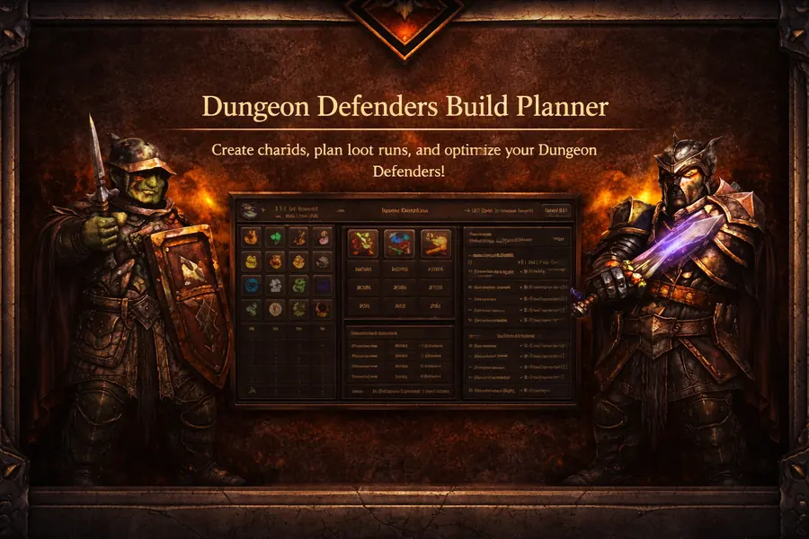

Dungeon Defenders Progression Hub!
Optimize your Dungeon Defenders progression with step-by-step guides, achievement routes, useful tools, and powerful planning resources.
Start Progression Optimizer
Chiku Progression Guide
Step-by-step path from early game to late game.

100% Completion Guide
Roadmap for Steam 100%, Ultimate Defender, Eternal Defender, and cleanup goals.

Gear Optimizer
Find the best possible stat setup for each hero and plan stronger gear builds.
Dungeon Defenders Build Planner
Create character builds, plan loot runs, and optimize your gear in Dungeon Defenders.
